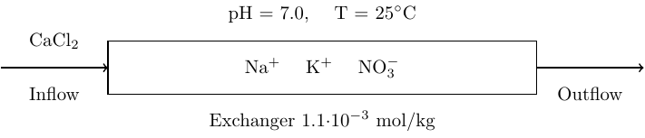
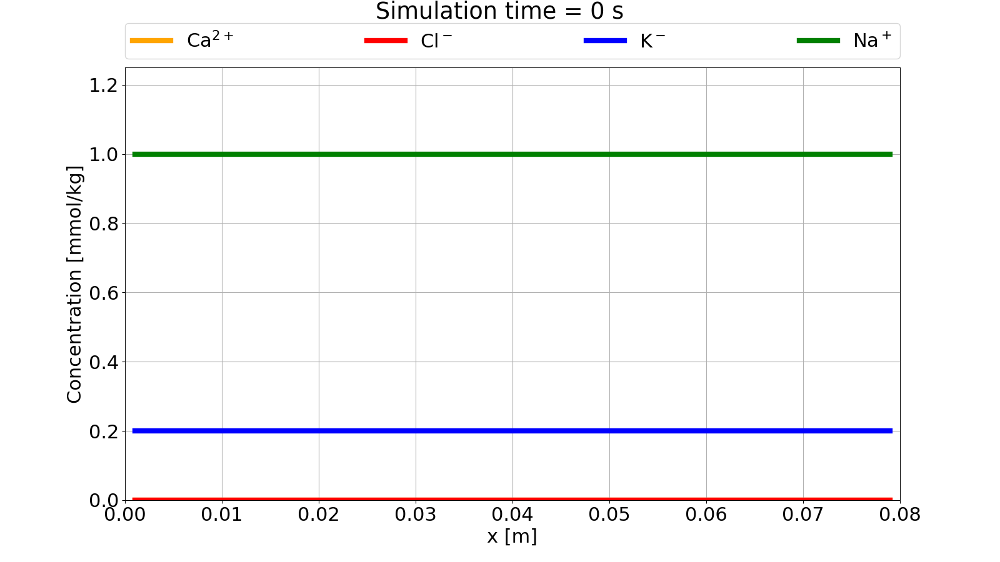
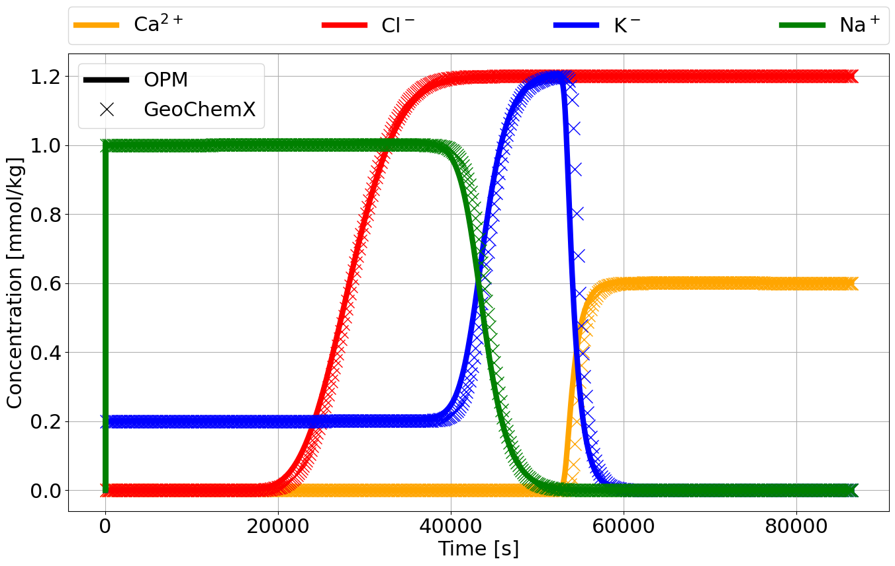

The following tutorial is based on Example 11 from the PHREEQC documentation. The setup is a simple 1D core with initial sodium-potassium-nitrate in equilibrium with a cation exchanger. The core is flooded with calcium chloride from left to right, with calcium, potassium and sodium reacting with the exchanger at all times.

The reactive transport simulation in OPM Flow is set up as a single phase, water flow with wells for in- and outflow of water with chemical species. Since the chemical species does not affect the properties of the fluid, this is in essence a tracer transport problem with local chemical equilibrium calculations.
We will only point out selected keywords necessary to set up the reactive transport, and refer to the OPM Flow manual for other keywords encountered in the full deck.
The geochemical model is activated using the GEOCHEM
keyword in the RUNSPEC section:
RUNSPEC
[...]
GEOCHEM
1* 1e-7 1e-8 CHARGE /The first item is a JSON file name for all inputs to the geochemical solver that are not passed through the deck (not needed in this example). The second and third item are material balance and pH convergence tolerances, while the forth item forces charge balance in the geochemical equilibrium solver.
All transported species must be given in the SPECIES
keyword in the PROPS section:
PROPS
[...]
SPECIES
CA CL K NO3 NA H /The species are as follows:
CA: calcium (Ca2+)
CL: chlorine (Cl-)
K: potassium (K+)
NO3: nitrate (NO-3)
NA: sodium (Na+)
H: hydrogen (H+)
SPECIES must contain all
transported species encountered in the simulations! This also includes
species that are implicitly present through, e.g., mineral
precipitations/dissolution (as in the mineral
reaction example)! An error will be given if there are
inconsistencies between OPM Flow deck species and internal geochemistry
solver definitions. A full list of accepted basis species for the
geochemistry solver can be found in the Appendix here. To
avoid possible formatting issues it is recommended to use nicknames for
the species.
Similar to the species definition, the cation exchanger is defined in
the IONEX keyword in the PROPS section:
PROPS
[...]
IONEX
X /A default name of X is hard-coded
for an ion exchanger in the geochemical solver! For more information on
the ion exchange in the geochemistry solver see here.
The initial conditions for each species are given one at the time
using the SBLK<name> keyword in the
SOLUTION section, where <name> refers to
names given in SPECIES:
SOLUTION
[...]
SBLKK
40*0.2e-3 /
SBLKNO3
40*1.2e-3 /
SBLKNA
40*1.0e-3 /
SBLKH
40*1.0 /
SBLKCA
40*0.0 /
SBLKCL
40*0.0 /Initial condition for the cation exchanger is given in similiar
manner using the IBLK<name> keyword in the
SOLUTION section, where <name> refers to
the name given in IONEX:
SOLUTION
[...]
IBLKX
40*1.1e-3 / Initial conditions for species and ion
exchangers can also be given as concentration vs depth using
SVDP<name> and IVDP<name>
keywords, respecitively, also located in the SOLUTION
section. For example, for potassium:
SVDPK
-- concentration depth
0.2e-3 100
0.2e-3 200 /would give the same initial condition as given with
SBLKK above.
SUMMARY keywords to get time
series of species are currently defined using tracer monikers, see well
tracer outputs in the OPM
Flow manual. For example, to get well production rate of calcium in
a well named PROD, one would write in the
SUMMARY section:
SUMMARY
[...]
WTPRCA
PROD /The in- and outflow of water are handled by standard well keywords
(see OPM Flow
manual), but injection of species such as calcium chloride is given
by WSPECIES in the SCHEDULE section:
SCHEDULE
[...]
WSPECIES
INJ CA 0.6e-3 /
INJ CL 1.2e-3 /
/The OPM Flow deck is run using the
flow_onephase_geochemistry binary with flags to limit time
steps, due to explicit scheme for reactive transport, and output of
geochemistry variables for visualization:
flow_onephase_geochemistry --enable-opm-rst-file=true --solver-max-time-step-in-days=2e-4 EX11.DATAThe core flood experiment is run over a time intervall of 24 h = 86400 s. A video of the time evolution for some of the species concentrations over the length of the core is shown here:

When calcium chloride is injected into the core at the left side, the calcium, potassium and sodium reacts with the cation exchanger. Chlorine is an inert ion and will flow through the core affected only by advection.
Time series of the simulation results at the effluent are compared to results running the 1D transport module of GeoChemX (.dat file located here). Both run explicit version the reactive transport equations and show good agreement in the results:

A file labeled GeoChemX TRANSPORT ex11.datex11OneDEff.out contains effluent species
concentrations and can be open in a CSV viewer, e.g. Excel.